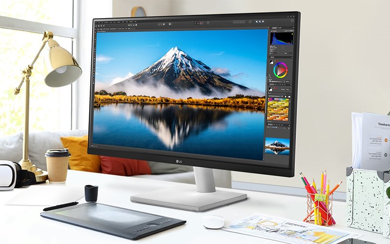

Free monitor & screen recycling with full compliance
If your organisation is about to upgrade your computer monitors or display screens, it's essential to consider how you will dispose your old ones in compliance with WEEE regulations. We offer nationwide collection and recycling of all your computer monitors of any size, brand, or quantity.
BOOK A COLLECTIONFree collections when you recycle at least 10 laptops, PCs & servers (any combination). It's also free to recycle almost all waste IT with us.

Eco-friendly monitor disposal
We recycle all types of display screens
Technology moves on fast! Newer monitors come with features like reduced blue light emissions, flicker-free technology, and low-haze screens, leaving old tech obsolete. The good news is 98% of LCD monitors are recyclable. Plastics can be repurposed into new products, circuit boards can be processed to recover useful metals, and cables can be stripped to reclaim copper and other materials.
We collect all computer monitors and display screens — including large and matrix style screens used in advertising and merchandising. Whether you are upgrading the screens for your office-based workforce, or you are having a refit or upgrade for your in-store or out-of-home advertising and merchandising screens, we are here to help.
It's free* to recycle monitors & displays
All monitors and display screens must be recycled by law in line with the WEEE regulations, but did you know that all components from your old monitors can be reused? This includes the plastic case, power board, charging cables and even the glass.
We collect all brands and types of monitors, displays, screens and televisions
We offer nationwide collection and recycling of all your computer monitors, display & advertising screens.
Monitors & televisions
All types: LCD, TFT, LED, OLED, IPS, TN, VA, curved, ultrawide, 4K, gaming, touch screen, portable, HDR, professional, broadcast.
All brands: Samsung, LG, Sony, Panasonic, TCL, Hisense, Vizio, Philips, Sharp, Toshiba, Dell, HP, Lenovo...
Commercial displays
Advertising & merchandising screens: All sizes of digital advertising / experience / merchandising screens typical of those used at events, in-store retail, and experiential destinations such as theme parks and stadiums.
We charge to recycle some types of display
All charges are ex-VAT:
- Displays up to 30", with working screens: FREE
- Displays up to 30", with cracked or broken screens: £7
- Displays over 30", working or broken/cracked: £1/inch
- Interactive whiteboards/smartboards (all sizes, working or broken): £1/inch
We do not accept CRT screens
We won't be able to collect the older style of cathode-ray tube screens typical of those used in old televisions and monitors, as they require special handling owing to the hazardous materials within them.
Ready to book?
Here's why businesses trust us to recycle their obsolete monitors & screens. We make sustainable IT disposal simple for all businesses & institutions.
Free qualifying collections
Free for 10+ qualifying laptops, PCs or servers.
Secure data destruction
Sensitive data handled properly.
Certificates provided
Documentation for your compliance records.
Carbon-negative recycling
Responsible, reuse-first processing.
Book your collection today and let us take care of compliance, security, and sustainability with transparent, certified recycling:
Frequently asked questions
Is monitor and screen recycling free?
Displays up to 30 inches with a working screen are recycled free of charge. Charges apply for larger or damaged screens, detailed below.
Do you charge for broken or oversized screens?
Yes. Displays up to 30 inches with a cracked or broken screen cost £7, and displays over 30 inches, working or broken, are charged at £1 per inch. Interactive whiteboards and smartboards are charged at the same rate regardless of condition.
Can you collect CRT screens?
No. Older cathode-ray tube screens require specialist handling due to the hazardous materials they contain, so we're unable to collect them.
What types of monitors and displays do you recycle?
We recycle LCD, TFT, LED, OLED, curved, ultrawide, 4K, touch screen and professional broadcast monitors, along with commercial advertising and merchandising screens, of any brand.
What happens to monitors after collection?
We assess every monitor for reuse before considering recycling. Where a screen can't be reused, components including the plastic case, circuit boards and cabling are recovered and reprocessed.
Do you provide a certificate of destruction for screens?
Yes. You'll receive a Certificate of Destruction and a certificate of carbon offset for the collection, and enhanced data destruction with detailed audit logs is available on request.
Can you collect monitors alongside computers and other IT equipment?
Yes. Monitors are commonly collected as part of a wider IT recycling collection alongside computers, laptops and printers.